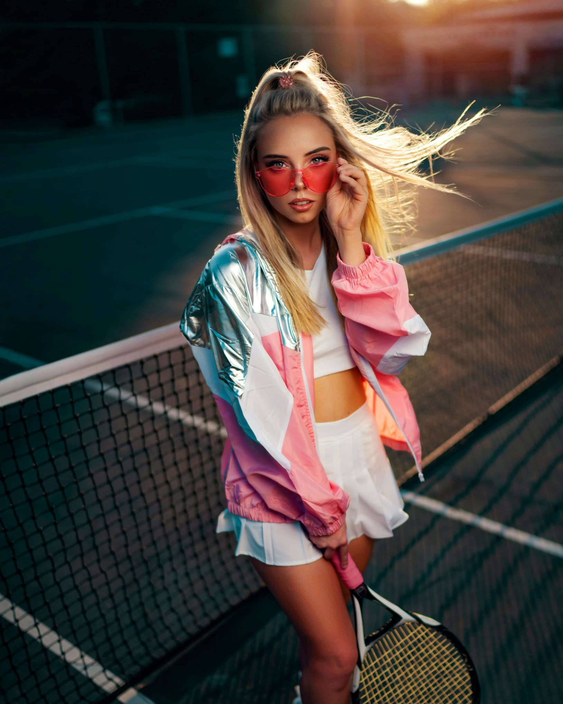
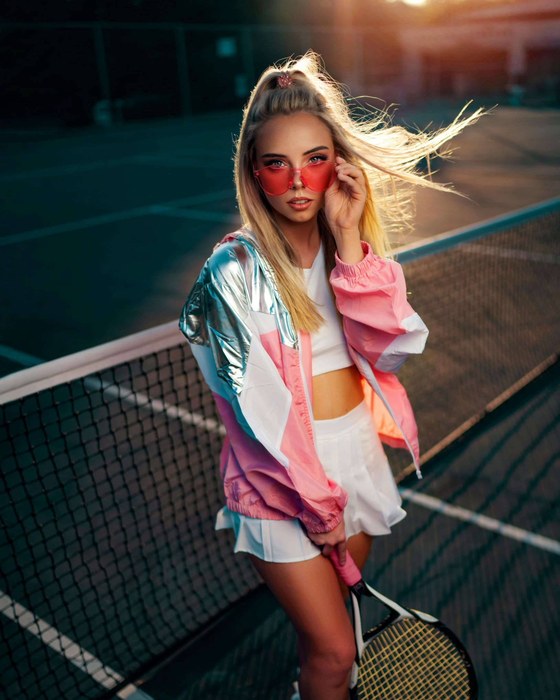

Fashion
The Pinnacle of Celebrity Fashion in 2024: Iconic Looks and Emerging Trends
01/08/2024 | By Sam
Celebrity fashion in 2024 has been a dazzling display of creativity, innovation, and trendsetting. As the year progresses, we’ve witnessed a series of standout moments that not only capture the essence of current fashion but also shape the direction of future styles. From the red carpet to street style, celebrities are making bold statements, pushing boundaries, and influencing fashion in profound ways. Let’s delve into some of the most iconic fashion moments and emerging trends of the year, highlighting how these stars are redefining the fashion landscape.
The red carpet remains a primary arena where celebrities showcase their most elaborate and memorable outfits. In 2024, several stars have delivered breathtaking appearances that set new standards for glamour and style.
Olivia Rodrigo at the Met Gala
At the Met Gala 2024, Olivia Rodrigo turned heads with a custom-designed gown by Alexander McQueen. The dress featured a stunning blend of metallic embroidery and dramatic tulle layers, paying homage to the gala’s theme "Cosmic Elegance." Rodrigo’s choice of bold, space-age accessories and a sleek, futuristic hairstyle completed the look. The ensemble was not only a visual spectacle but also a reflection of Rodrigo’s dynamic personality, earning her praise from both fashion critics and fans.
Timothée Chalamet at the Oscars
Timothée Chalamet made waves at the Oscars with a striking velvet suit by Prada. The tailored jacket featured an asymmetrical cut and embellished details, while the deep plum color added a touch of modernity. Chalamet’s look was a perfect blend of classic elegance and contemporary edge, setting a new standard for men’s red carpet fashion. His choice demonstrated how traditional elements can be reinvented with a fresh perspective, making him a standout figure in male fashion.
Zendaya at the Golden Globes
Zendaya’s appearance at the Golden Globes 2024 was nothing short of spectacular. She wore a shimmering gold gown by Valentino, which featured a high slit and a flowing cape. The gown’s opulent fabric and Zendaya’s chic updo created a look that was both regal and modern. Her fashion choice highlighted her ability to blend timeless glamour with a contemporary twist, reinforcing her status as a style icon.
 

Billie Eilish has continued to make waves in the streetwear scene with her oversized silhouettes and bold prints. Her recent collaboration with Off-White has produced a collection that merges high fashion with street sensibility. Eilish’s outfits, including oversized cargo pants and graphic tees, reflect her unique style and have resonated with fans and fashion enthusiasts alike. Her influence is evident in the growing popularity of her aesthetic, which combines comfort with high-fashion elements.
Harry Styles’ Eclectic Everyday Looks
Harry Styles remains a trailblazer in street style, known for his eclectic and gender-fluid approach to fashion. His recent outfits feature a mix of vintage and contemporary pieces, often incorporating playful patterns and bold colors. Styles’ use of brightly colored suits, patterned shirts, and chunky boots exemplifies his ability to blend various fashion genres into cohesive, eye-catching looks. His style challenges traditional norms and encourages a more inclusive and experimental approach to fashion.
Rihanna’s Effortless Chic
Rihanna’s street style in 2024 has been characterized by a sophisticated yet relaxed approach. Her recent looks include oversized blazers, tailored trousers, and high-fashion sneakers. Rihanna’s ability to mix high-end pieces with casual elements demonstrates her mastery of balancing style and comfort. Her influence extends beyond her own wardrobe, impacting how others approach casual fashion with a touch of luxury.
Travis Scott x Nike
Travis Scott’s latest collaboration with Nike continues to push the envelope in sneaker fashion. The collection includes innovative designs and limited-edition releases that have generated significant buzz. Scott’s approach to sneaker design, featuring distressed details and unconventional materials, has resonated with sneakerheads and fashion enthusiasts alike. This collaboration underscores the growing trend of celebrities shaping the sneaker market.
Bold Colors and Metallics
This year, bold colors and metallic fabrics have been prominent both on the red carpet and in street style. Celebrities are embracing vibrant hues and shimmering materials, adding a touch of drama and excitement to their outfits. This trend reflects a desire for eye-catching and statement-making fashion, with celestial themes and futuristic elements becoming increasingly popular.
Conclusion
2024 has been a remarkable year for celebrity fashion, characterized by standout moments and evolving trends. From stunning red carpet appearances to influential street style and exciting fashion collaborations, celebrities are once again redefining the fashion landscape. Their bold choices and innovative designs not only capture the essence of current fashion but also set the stage for future trends. As we continue to follow the dynamic world of fashion, it’s clear that celebrity style will remain a powerful force, shaping and inspiring the industry in new and exciting ways.